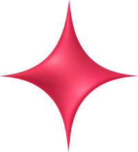
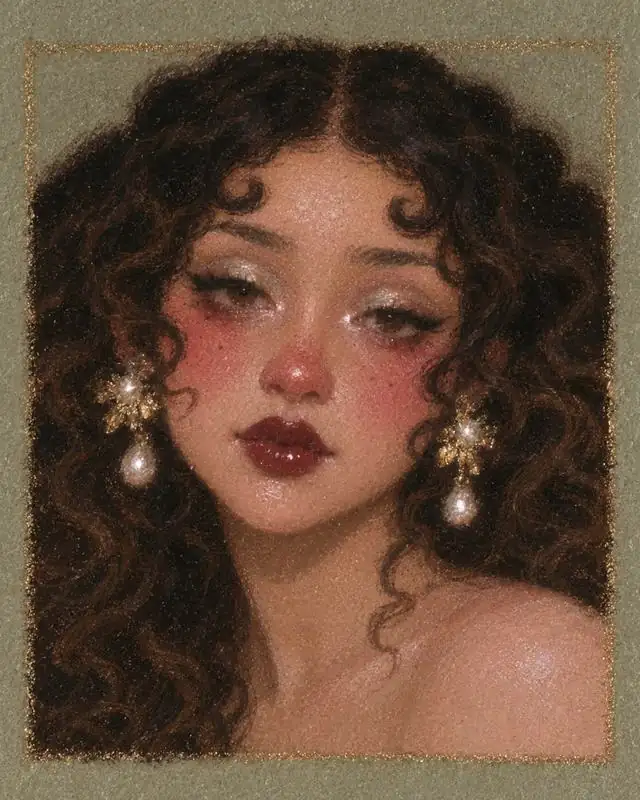
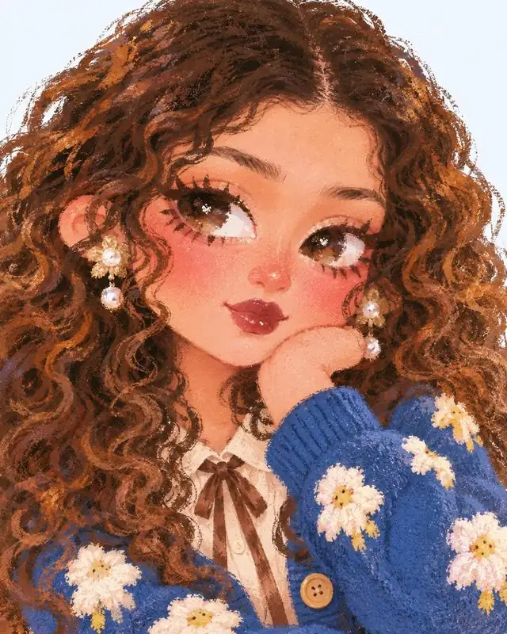
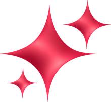
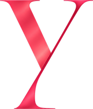

Para negocios
Lo hago yo por ti
Branding, rebranding, contenido y sistemas con IA para que tu marca se vea como se siente, sin que tengas que meterte a aprenderlo todo.
Cotiza tu proyectoClaudia González · Creative Director · Chicago
Ideas también tienen estilo
Dirección creativa y diseño visual con IA
Le doy a las marcas identidad, personajes y mundos visuales con historia. Diseño, storytelling y herramientas de IA, siempre con dirección propia.
Visual storyteller · creative direction & AI visual design for brands.
@yosclau en Instagram



Quién soy
Soy mexicana, vivo en Chicago y soy creativa visual. Hago dirección creativa y diseño con IA: tomo una idea y le construyo un mundo, con su estética, sus personajes y su historia.
Estudio diseño y también soy creadora de contenido. Mi marca personal, @yosclau, es mi laboratorio: ahí pruebo, aprendo y comparto lo que hago.
Me mueve mezclar disciplinas (diseño, arte, storytelling, fotografía y tecnología) y convertirlas en algo que se sienta tuyo.
Tengo fe en la gente. Y tengo fe en que podemos usar la IA para construir algo mejor, no algo peor. Depende de nosotros, y yo elijo creer.
“Mi identidad no vive en una sola estética; vive en cómo combino color, naturaleza, narrativa, objetos y contraste.”
keep moving forward Experimentar, equivocarme y seguir.
Servicios
Para marcas, emprendedores y creadores que quieren verse como se sienten.

Logos, elementos gráficos, paletas y tipografía para que tu marca se reconozca a primera vista.
Tu logo en movimiento: intros, cierres de video y detalles que le dan vida en redes.
Imágenes, campañas y videos creados con IA y dirigidos con criterio, listos para redes y anuncios.
Mascotas, personajes y universos visuales para que tu marca tenga historia y personalidad propia.
Sitios web con tu identidad visual: claros, bonitos y pensados para verse bien en el celular.
Del concepto a la pieza final: idea, moodboard, estética y guía visual para que toda la campaña hable igual.
Art direction · Creative concepting · Visual storytelling · Branding · AI-assisted creative development · Creative content
Cómo trabajo contigo
Para negocios
Branding, rebranding, contenido y sistemas con IA para que tu marca se vea como se siente, sin que tengas que meterte a aprenderlo todo.
Cotiza tu proyectoPara creativos y freelancers
Te guío para armar tu marca personal y perderle el miedo a la IA. Te enseño lo que a mí me funciona, paso a paso y sin términos raros.
Agenda tu sesiónMi norte
“No se trata solo de diseñar cosas bonitas. Se trata de convertir ideas en conceptos, sistemas y mundos con una voz propia.”
crear no empieza en una herramienta, empieza en una posibilidad
Proyectos destacados
En cada proyecto separo qué decidí yo y qué generó la herramienta. La IA genera opciones; la dirección es mía.
01
Cliente · Branding y anuncios
desliza las piezas →
02
Video IA · Proyecto conceptual
03
Personajes · Serie personal
desliza la serie →
04
Personajes · Avatares 3D
05
Diseño gráfico · Experimento
Inspirado en “50 design styles every designer should know for better prompting” (UX Planet). Cada póster de esta serie es mío.
Constantes
Rara vez pienso en una pieza aislada. Pienso en series, sistemas y universos.
Burgundy, rojo cereza, azul cielo, rosa, verde, amarillo y naranja. Incluso lo neutro necesita pulso.
Flores, animales, cielo, luna, sol y paisajes: lo vivo como fuente de color y ternura.
Golden hour, brillos, luz etérea, glow. La luz decide cómo se siente una idea.
No solo quiero algo para mirar; quiero que exista algo que contar.
Diseño, arte, storytelling, objetos, espacios, fotografía, tecnología y experimentación.
Temas que vuelven: curiosidad · transformación · identidad · aprendizaje · humor · emoción · imaginación
Proceso
Una imagen, una emoción, una conversación, algo que aprendí.
Referencias, colores, historias, formatos y posibilidades. Moodboards con intención.
Uso herramientas de diseño y de IA para explorar rápido muchas versiones.
Elijo, edito y conecto las piezas en un sistema coherente. Ese criterio es el trabajo.
Mi caja de herramientas: Adobe Creative Cloud · Canva Pro · Higgsfield · ChatGPT · Claude
Estudio
Además de mi trabajo propio, formo parte de un estudio creativo con amigos que se complementan. Cada quien aporta lo suyo y juntos llevamos un proyecto de la idea a los resultados.
Dirección creativa · diseño con IA
El mundo visual: concepto, estética, personajes e historia.
Estrategia · ads · marketing
Estrategia de contenido, paid ads, marketing y planeación.
Ver su sitioDiseño gráfico · marca · papelería
Identidad de marca, papelería, carteles y piezas para redes.
Ver su sitioestrategia, diseño y contenido, en un mismo equipo ✦
Redes · tips · tutoriales
La IA no tiene que darte miedo ni dolor de cabeza. En mis redes comparto tips, tutoriales y mi opinión sin filtro sobre IA, diseño y creatividad, explicado como amiga. Lo que a mí me está funcionando, te lo comparto para que a ti también te funcione.

Contacto · Let’s work together
Identidad visual, contenido con IA, personajes, websites, una campaña completa o una sesión 1:1 para tu marca personal. Escríbeme y lo platicamos.
¿Prefieres escribirme directo?
Yo te tengo fe